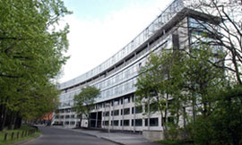
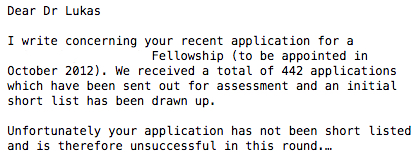

|
In the past few years, I have been asked to give informal presentations
to groups of graduate students in Germany on the options in academia
after a PhD. These were overviews, based on my own experiences. Below,
I have turned my slides from these presentations into post in case it
might be helpful for others trying to decide whether a career in
academia might be of interest to them and the possible options. These
are my personal experiences, so they present a biased view, and
information might be outdated - so please consult other resources and
talk to your peers and mentors before considering this important step.
First: what is academia?
The New Oxford American Dictionary describes it as
"the environment or community concerned with the pursuit of research, education, and scholarship"
In terms of career, it would be any position that is associated with an institution with teaching and research: a university, a college, or a research center.
There are essentially three options for the first step after the PhD:
|
Independent fellowship
You
have an idea for which you obtain third-party funding (see below for
potential funders). There are a number of fellowship programs that
focus on candidates who just finished their PhD. The goal is to gain
independence, learn new things, and complete a project. Fellowship
cover a salary but usually with only limited, if any, funds for your
expenses. You will need a host lab/institution
|
Postdoc position
You
apply for an advertised postdoc position. These are offered by senior
researchers (see below for some places where these are advertised). The
position is usually part of a grant or a project, and the main
direction of the research is usually set. As a postdoc, you are still
expected to develop the project and might have some opportunities to
explore independent avenues.
| Lecturer
You
apply for a position offered by a research institution. This could
either be a tenure-track position leading to a permanent position or a
short-term appointment to teach specific courses. The tenure-track
route right out of the PhD is rare (especially in Europe). For a
teaching appointment you will usually get paid per course, and any
research you would want to conduct would have to occur in additional
time.
|
How do countries differ post-PhD?
This is based on countries where I have experience. More information is for example provided by the European University Institute.
Germany
- Traditional system is changing and rules might be slightly different in each local state
- Generally though, post-PhD experience is a critical step, usually between 5-10 years
- Ideally this would include experience abroad
- The goal of the post-PhD period is to complete a coherent body of research, as evidenced by several first- or last-author papers, supervise PhD students, and gain some teaching experience
UK
- There is a system of junior (2-3 years) and senior (5 years) fellowships
- The goal of the 3-8 years post-PhD period is to show independence
- Some universities have now introduced a probationary period during which prospective lecturers have to publish several REF-worthy papers,
obtain funding, and teach. Completing a senior fellowship usually
fullfills these criteria, so on obtaining one of these you can
negiotate with the host institution whether they will offer you a
permanent position.
USA
- There is a more diverse system, from more teaching intensive to more research intensive institutions
- Compared to Europe, there is less funding for independent fellowships
- Compared to Europe, some teaching experience is usually expected
- University positions can be entered relatively soon after the PhD, and include a probationary period
France
- Generally, post-PhD period is expected
- In order to apply for professorship positions, you must demonstrate your qualifications to a central agency the year before
- These qualifications are similar to the expectations in the UK and Germany
|
How to find out about post-PhD opportunities?
- Personal contacts: these can still play a large role.
- Social media: Twitter and Facebook is a place where lots of positions are now being posted
- Workshop/conferences: these offer a chance to check for potential hosting labs for independent fellowships
- Websites - Here are some examples:
|
 Euraxess Euraxess
Has offers from across Europe - most positions associated with ERC grants should be posted here
|
 ecoevojobs ecoevojobs
Crowd-sourced google doc with tenure-track positions (mainly in the US)
|
 independent fellowshis independent fellowshis
I compiled a list of 230 funding agencies for independent postdoctoral research fellowships in the biological sciences
|
 various job boards (such as evoldir) various job boards (such as evoldir)
A list with links to job boards that collect adverts for postdoc and tenure-track positions provided by academic journals, societies, universities, and individual researchers
|
 ELFI ELFI
SPIN
Research Professional
Grant databases in Germany (elfi), USA (spin), and UK (research
professional) - all three are subscription-based services (many
universities have a central subscription)
|
What to do in academia?
The
general advice I received is "choose a question, then an approach, then
a study system". Ideally, you will be able to establish a strong
independent research niche with a clear future trajectory - something
academic you are known for. In some way, there is still a perception
that someone who addresses an issue is an academic while someone who is
a specialist in an approach is a research technician. Your niche does not have to be anything novel, you can combine different interests, and it
can be something where you are still learning a lot yourself. Maybe one
way to think about it is to consider how a search committee going
through their list will perceive you: will they immediately have an
image of your research associated with you and see something that
provides a clear fit within a research institution, including the
profile you would bring, the potential overlap in interest, the courses
you could teach and approaches PhD students would learn? As you are
setting out on this path, you might also have to consider other things,
such as feasibility, risk, and novelty (see below). These are factors
to personally weigh and might sometimes even be outside of your own
control.
|
Fit versus Feasibility
Most
post-PhD positions come with limitations: these might be in terms of
where you are based, how much money you have for your project, and how
much time you have (most fellowship and postdoc positions tend to last
3 years or less). Accordingly,
you might have to figure out whether you would be able to achieve the
perfect approach in the perfect study system. In addition, fundamental
constraints might prevent you from using the perfect approach in the
perfect study system.

In
my field of behavioural ecology, study system usually refers to the
species chosen to observe. Some species might be the perfect fit for a
given question as there is a lot of variation in the behaviour of
interest. However, if this is a species such as a mole-rat, you might
be limited in actually studying this variation as observing a sufficent
number of wild individuals might simply not be feasible in a species
where individuals live widely dispersed underground.
|
In
turn, there are many species that might be easy to observe: they are
active during the day, live in open habitat, congregate in large groups
within small areas, and are not afraid of humans. In these species, you
are likely to be able to get repeated observations on a large number of
individuals. However, these species often share certain
characteristics, and the questions that can be answered are accordingly
more limited.
|
Risk versus Reward
A
related decision to make with regards to the potential limitations in
any position is how much risk and investment you are able to afford.
Evaluators tend to expect to see products (publications) coming out of
any position so taking risks or large investments without immediate
returns might lead to a CV that could get judged as less accomplished
as that of someone who produced a steady set of publications.

Right
after my PhD, I started to collect data on a large sample, which took
more than 3 years. I did not get any publications during this time. I
felt I could take this risk and investment, because I had a supervisor
who strongly supported the project: I knew he would explain the
situation in any reference letter and he was proactive in seeking
funding to extend my position, which luckily we got.
|
For
me, this investment in building a comprehensive database was worth it.
I have since been able to test various hypotheses using these data,
resulting in multiple articles. I think these articles are stronger
because I made this investment. It also allowed me to establish a niche
for myself, resulting in collaborations and a clearer vision of what I
wanted to do after my first post-PhD position.
|
Novelty versus Building on Strengths
Especially
during the first position right after your PhD, you have some freedom
for change: you can change the question you want to focus on, learn a
completely new approach, or change the culture and setting you are
based in. This might allow you to build new connections and broaden
your horizon. However, alternatively you might want to build on your
existing skills and connections. Often there still seems to be a
preference for people who have been at multiple institutions and also
have experience in multiple countries. Recently, these
perceptions seem to have slightly been starting to change, as people
realize that not everyone might be able to uproot their life.
Right
after my PhD, I moved from Leipzig in Germany to Cambridge in the UK.
The project sounded very interesting to me and it was a position
working with a strong supervisor in a fascinating department. But what
really helped was that I already had some friends there and that during
my interview I enjoyed my interactions with the other members of the
research group. This made the move easier. Afterwards, I was lucky that
through additional funding, I was able to have three consecutive
postdoc positions in the same research group so I did not have to move
frequently.
|

I am now back in Leipzig at the same research institute, but in a
different department from where I did my PhD. Before the round of
applications that led to my current position at the MPI EVA, my partner
and I decided to draw up a wishlist of points for any new place, which
we used to decide on whether to even consider applying. These points
focused on our personal preferences of the place we wanted to be in
rather than just an academic fit: the size of the town, having friends,
preferred climate, etc. I only applied for positions in places that
ticked at least half of the boxes on the list.
|
Why stay in academia?
There
are many good reasons to think about pursuing a career in academia. An
academic position can provide some freedom: you have some choice what
you work on so can satisfy your curiosity and when you work every day
can be somewhat more flexible than in some other jobs. An academic
career can lead to a decently paid, stable job. You might also
appreciate the feeling of educating students, teaching them new things
and helping them on their path through life. Plus, your work is likely
to have various other positive impacts on the life of others.
|
Why choose a career other than in academia after your PhD?
There
are equally many good reasons to think about pursuing a different
career. There are lots of other opportunities in industry and the
public sector (in Germany, unemployment rates for PhD holders are very
low). A
PhD provides you with a large number of transferable skills: for an
alternative career the papers you published might not matter, but that
you managed a team of undergraduates, obtained and managed a budget,
learned statistical and other technical skills, etc. While
it might be difficult to find out about these alternatives since
everyone you engage with on a daily basis has chosen an academic career
as their path, there are usually professionals around whose job it is
to help you get a better view of career options. Such a decision should
reflect your personal preference, balancing the pros and cons of the
various options. So it might also be worth taking some of the negatives
of an academic career into account:
|
Frustration and Rejection

During
the steps of your academic career, you and your work will constantly be
evaluated.
There is competition over opportunities, with limited funding and
positions, and in the current publication system, your manuscripts
might get rejected by editors and reviewers. The process is often not
visible and can be and feel unfair. In turn, rewards are often delayed.
Everyone has different strategies to find the motivation to keep going
forward.
|
Scientists are still people
Academic jobs involve regular interactions among people in a diversity
of settings. These can carry a risk of unwelcome and unethical
approaches, including various forms of harassment and breach of
boundaries. None of this should occur, and more and more dedicated
individuals are taking active steps to root out such behaviour.
However, it currently sadly still is part of the reality of many
individuals.
|
Work and private life

There are only a limited number of opportunities in any given place,
which open at unpredictable times. Accordingly, the reality is that you
will likely have to move to take up an academic position. This can make
it hard to combine an academic career with your personal life - when
you have partners/family and when you do not. It might mean having to
spend time apart from those important to you, frequently having to try
to build new connections, and a wait until you can feel settled.
|
How to plan for a career in academia during your PhD?
My
main advice is to consider everything you do as worthwhile rather than
just focusing on abstract endproducts such as publications. There is a
long lists of personal skills you are likely developing which are
crucial for a career in academia, including:
- Stamina: ability to learn from failures
- Completion of projects: sticking with projects through difficult times
- Social skills: interaction with a range of people, establishing connections
- Presentation skills: presenting information to a diversity of audiences
- Public outreach: realizing what matters and how to convey the importance of it
- Writing: preparing grants and papers differs from talking about something
- Manage a team: you are likely to be part of a team and have to manage your role
Focusing on seeing your progress on a personal level can help to see
you through harder times during your PhD, identify areas where you
would like to develop more, and lets you see what you can bring to a
new position - and all these skills tend to be valued as much inside of
academia as in any other career.
|
|
|